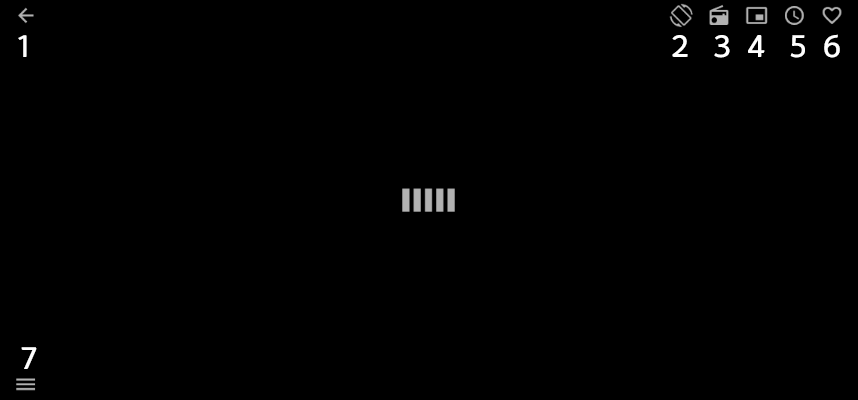
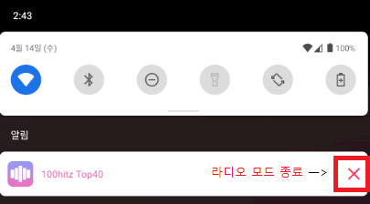
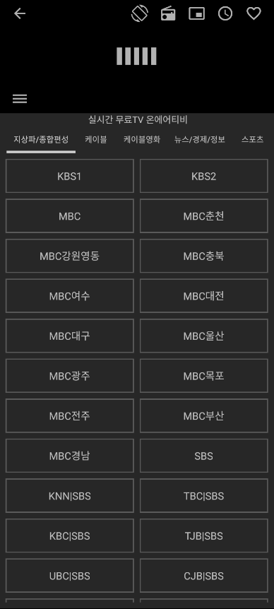

시청 화면을 터치하면 바가 나타납니다.

1. 메인 채널 메뉴로 이동
2. 화면회전(통합)
3. 라디오모드
4. 백그라운드 플레이어
5. 취침예약(앱 자동종료)
6. 즐겨찾기 추가/삭제
7. 소리조절/밝기조절 내장 및 즐겨찾기 추가 목록


한국 TV 방송사의 저작권 문제로 한국 국적의 IP에서만 송출을하고 있습니다.
해외에 있으면 VPN 우회 앱을 통해 온에어티비의 한국 채널 전체를 볼 수 있습니다.
온에어티비는 가장 빠른 네트워크 기반이 탑재되어 있습니다.
*사용자의 네트워크 상태에 따라 속도가 다릅니다.*
시청 중 버퍼링이 걸린다면 사용하시는 공유기의 속도 1기가 또는 인터넷 속도가 1기가 맞는지 부터 확인 하셔야 합니다.
*채널을 클릭했을 때 작동중지 메시지가 뜬다면 채널 업데이트를 해야됩니다. 이같은 오류가 발생되면 개발자 메일로 문의 주시기 바랍니다. 즉시 해당 채널을 점검하겠습니다.*
채널선택 시 버퍼링 무한로딩은 해당 채널의 접속자가 많아 접속이 안되는 경우이며 메인화면으로 넘어와서 해당 채널을 클릭! 다시 이같은 방법으로 몇번을 하다보면 해당 채널을 보실수 있습니다.
1. 시스템 설정 수정 권한은 화면 밝기 기능을 사용하기 위해 필요한 권한 입니다.
2. 다른 앱 위에 표시 권한은 백그라운드 플레이어 기능을 사용하기 위해 필요한 권한 입니다.
3. 전화를 걸고 관리 권한은 라디오모드와 백그라운드 플레이어에서 전화 송/수신여부에 따라 자동 소리조절을 사용하기 위해 필요한 권한 입니다.